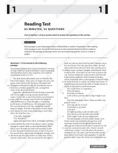

SU2023-yil may oyidagi SAT imtihonining o'qish qismi uchun test savollari to'plami.
Ushbu hujjat 2023-yil may oyida o'tkazilgan SAT imtihonining o'qish (Reading) qismiga oid test savollarini o'z ichiga oladi. Unda turli mavzulardagi matnlar va ularga doir tahliliy savollar keltirilgan bo'lib, abituriyentlarning matnni tushunish va tanqidiy fikrlash qobiliyatini baholashga qaratilgan.